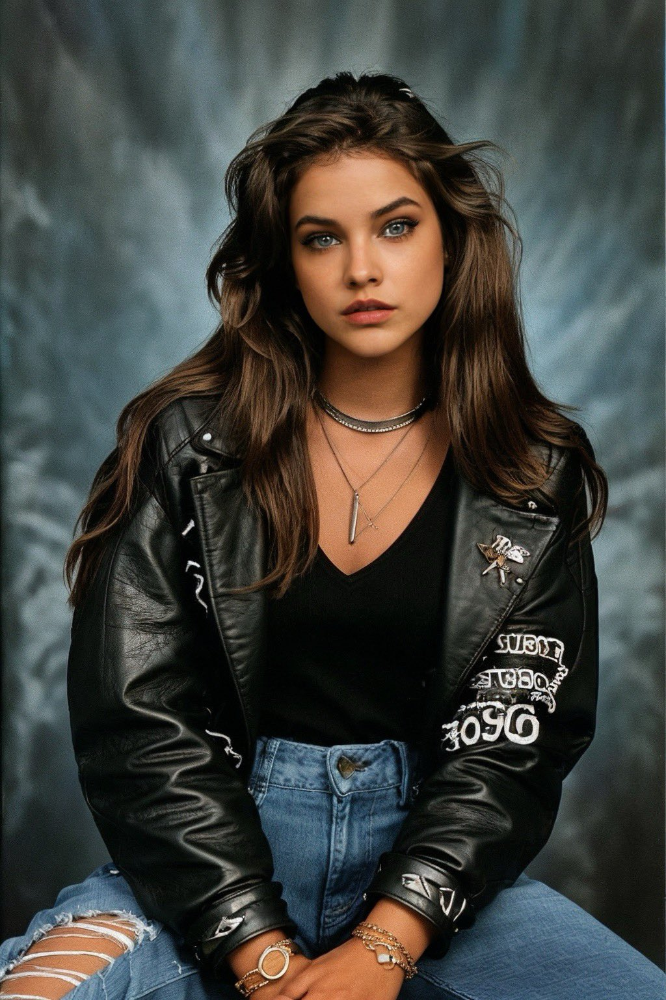
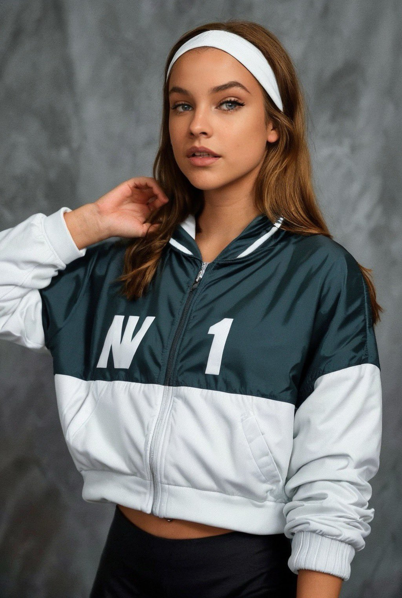

Photo Gallery




Here you will find all the most up-to-date information about yearbookai, which may be missing at the moment, but we are working on it urgently!
Yearbook AI is a trend that emerged on social media where individuals post photos that resemble 1990s high school yearbook pictures. This trend is driven by an app named EPIK - AI Photo Editor, which facilitates the creation of these retro-style photos using artificial intelligence. Here’s a detailed rundown of the Yearbook AI trend and the EPIK app:
The trend involves individuals posting photos on social media that look as if they were taken for a 1990s high school yearbook. These photos are not real yearbook pictures; instead, they are generated using artificial intelligence. The generated photos feature '90s hairstyles, clothing, and the generic blue-grey backdrop characteristic of yearbook photos from that era.
This trend showcases a creative and nostalgic use of AI, allowing individuals to reminisce and engage with a stylized past while sharing these generated memories on social platforms.
People have shown great interest in how to engage with this popular trend. Many online resources and articles provide guides explaining how to create their own '90s style yearbook photos using the EPIK app. For example, this video below:
The EPIK app is free to download, but generating AI yearbook photos is a paid feature. The cost is $5.99, with a speedier service priced at $9.99.
The Yearbook AI trend has gone viral on TikTok and other social media platforms, with people sharing their AI-generated yearbook photos and enjoying the fun of seeing themselves in a virtual '90s high school scenario.
Users can choose from four different high school-style aesthetics: popular, sporty, smart, and grunge, which enhances the possibilities for user engagement and personalized experiences.
This trend allows users to travel back to the '90s, experiencing a sense of nostalgia, which is a point of interest for many engaging with this trend.
Some social media influencers and celebrities have also engaged with this trend, further propelling its popularity.
There are a number of tools you can use to participate in the yearbookai trend for free! For example, this video below: